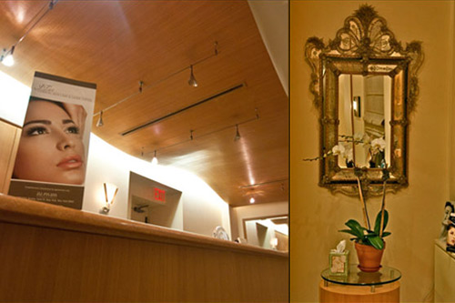
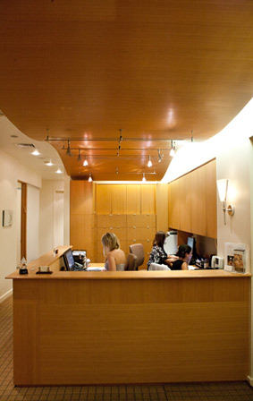

About

Considered a pioneer in the field of aesthetic rejuvenation, Estethician Joie Tavernise is trained in the latest skincare and laser technologies on the market. Her unique approach to skincare repair and maintenance is informed by more than a decade of professional and academic experience. Joie is an active member of the Society of Plastic Surgery Skincare Specialists; National Coalition of Estethicians, Manufacturers/Distributors & Associations; and Society for Medical & Clinical Hair Removal. She regularly participates in nationally recognized [medical and holistic] skincare seminars to lend her expertise to other educators and clinicians.
Joie’s philosophy centers on the idea that treatments should be customized to suit each client’s individual skincare needs. She finds that her tailored procedures are effective in accomplishing clients’ goals by helping them achieve beautifully youthful complexions. Joie’s dedication to remain at the forefront of advancements in non-invasive ultrasound and laser technologies has enabled her to successfully treat hormone, environment, and age- related skin problems. The focus at JTav Clinical Skin Care is to offer safe and effective non-surgical, non-invasive clinical skin care options to address concerns such as: age spots/hyperpigmentation, broken capillaries, acne, fine lines/wrinkles, poor skin elasticity, rosacea, unwanted hair, and more.
Joie’s enthusiasm in the evolving world of health and beauty has led her on an exciting journey in the cosmeceutical industry, including the formation of her own product line. Joie used her extensive knowledge of the aging process and antioxidant properties to carefully select scientifically backed ingredients for her skincare line. The JTav product line is definitely a game changer—clients of all skin types report unparalleled benefits from their personalized skincare regimens!
The services offered at the JTav Clinical Skin Care office in New York City are provided only after Joie completes a full skin analysis of each patient. Consultations and treatments are conducted discretely in a private medical office on the Upper East Side of Manhattan. Schedule an appointment with Joie to find out how you can start looking and feeling your best!
Office / Staff
- 
- 
Enjoy a tranquil ambience and let yourself unwind as you await your services.

Marie Lowarance
CLSTM has lived in Texas for many years and moved to New York ten years ago, and has been in the laser skin industry for nine of those years. She has trained and been certified by many laser manufacturers. Marie has previously owned and operated laser centers in New York City, Palm Beach Florida, and Westport Connecticut and has trained and certified many doctors and their staff in the use of lasers for many procedures in the anti-aging skin care rejuvenation field. Marie will provide each client with an accurate assessment to meet their needs and goals. All consultations are held in a medical office and are very private and discrete.
-
David P. Rapaport MD. F.A.C.S
Dr. Rapaport is a board certified plastic surgeon.